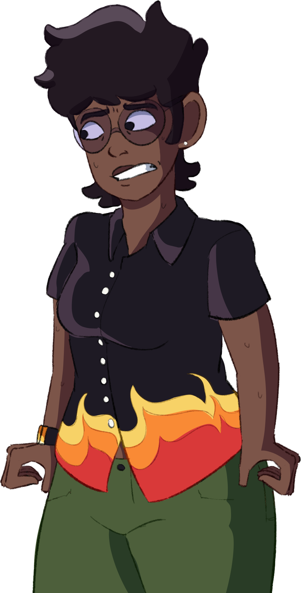

MÚSICA DO EPISÓDIO 1
Anaya Arruma um Emprego
Anaya procura um emprego em Neon Plaza City e things do get wacky...
Unpacking (TERMINADA)
Responsável: BitsVitais
Anaya e Mika abrem caixas e conversam um pouco sobre a nova vida na cidade.
Neon Plaza City (TERMINADA)
Responsável: Nishi
Mas que lugar legal...
Nice Moustache (TERMINADA)
Responsável: Nishi-san
Música tema do nosso querido velho de terno roxo.
Anaya Looks for a Job
Responsável: Guides
Anaya vai para algumas entrevistas and things do get wacky...
Anaya Shops at Sandra's
Responsável: Guides
Que tipo de loja é essa...?
Meeting Jamie (and Vanessa)
Responsável: Guides
Quem são essas pessoas?
Sandra's Jazz
Responsável: Guides
E não é que a Vanessa tem uma música tema maneira...
EVIL CO. (TERMINADA)
Responsável: Nishi-san
ESQUEÇA TUDO.
Home-like Bossa (TERMINADA)
Responsável: Nishi-san
Anaya reflete no dia de hoje enquanto acende levas a seus pais.
The Real Bad Guys
Responsável: Guides
Sylvian, a Patrulheira e sua chefe têm uma conversa sobre Anaya em seu escritório.
obs: tente imaginar essa musica num tempo mais devagar.
